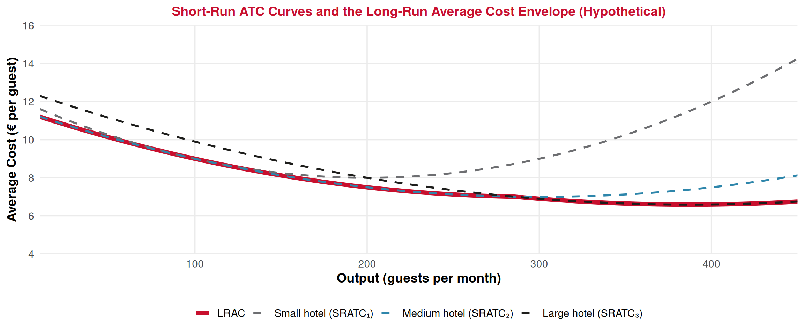

Producer Theory
Lecture 10: The Geometry of Costs — Short Run vs Long Run
Paulo Fagandini
2026
Welcome Back! 👋
We’ve crossed the aisle:
🛒 Lectures 5–9: Consumer Theory (demand side)
🏭 Lectures 10–17: Producer Theory (supply side)
🎯 Today’s Goal: Understand the cost structure of firms
How do costs behave as production changes?
From Consumer to Producer
The Other Side of the Market 🤝
Consumer (Lectures 5–9):
- Maximizes utility 📈
- Subject to budget constraint
- Generates demand curves
- Tools: indifference curves, MRS, budget line
Producer (Lectures 10–17):
- Maximizes profit 💰
- Subject to cost structure
- Generates supply curves
- Tools: cost curves, marginal analysis
. . .
💡 Key parallel: Just as consumers face trade-offs with limited income, producers face trade-offs with limited resources and technology.
The Producer’s Problem 🏭
The Producer’s Goal
A firm wants to maximize profit. To do so, it must understand its costs at every level of output.
\[\pi = \text{Total Revenue} - \text{Total Cost} = TR - TC\]
Before we can find the profit-maximizing quantity (next lecture), we need to master costs.
Today we answer:
- 1️⃣ What types of costs does a firm face?
- 2️⃣ How do costs change as output increases?
- 3️⃣ What is the difference between short run and long run?
Short Run vs Long Run
Defining the Time Horizons ⏳
Short Run vs Long Run
Short run: A period in which at least one factor of production is fixed (cannot be changed). Typically, capital (machines, buildings) is fixed.
Long run: A period long enough that all factors of production are variable. The firm can adjust everything: equipment, factory size, workforce.
🔒 Short Run — Tourism example:
A hotel has 100 rooms. It cannot build more rooms this season. It can only hire/fire staff (variable input).
🔓 Long Run — Tourism example:
The hotel chain can build a new wing, open in a new city, or exit the market entirely.
Inputs: Fixed vs Variable 🔧
| Fixed Inputs 🔒 | Variable Inputs 🔄 | |
|---|---|---|
| Definition | Cannot change in the short run | Can be adjusted at any time |
| Examples | Building, machines, lease contracts | Workers, raw materials, energy |
| Tourism | Hotel building, aircraft, kitchen equipment | Staff, food supplies, fuel |
| Cost behavior | Same cost regardless of output | Cost changes with output |
. . .
The Key Distinction
In the short run, the firm has both fixed and variable inputs. In the long run, all inputs are variable — there are no fixed costs.
The Law of Diminishing Returns 📉
Law of Diminishing Returns
When we keep adding more of a variable input (e.g., workers) to a fixed input (e.g., a kitchen), eventually each additional worker adds less and less to total output.
Tourism example: A restaurant kitchen with 5 stoves :cooking:
| Extra chefs hired | Extra meals/hour produced |
|---|---|
| 1st chef | +30 meals |
| 2nd chef | +25 meals |
| 3rd chef | +18 meals |
| 4th chef | +10 meals |
| 5th chef | +4 meals (kitchen is crowded!) |
Types of Costs in the Short Run
The Cost Family 👪
All short-run costs derive from three building blocks:
🔒 Fixed Cost (FC)
Costs that do not change with output.
Must be paid even if \(Q = 0\).
Hotel: mortgage, insurance, property tax
🔄 Variable Cost (VC)
Costs that change with the level of output.
Zero when \(Q = 0\).
Hotel: staff wages, laundry, food, energy
➕ Total Cost (TC)
The sum of all costs.
\[TC = FC + VC\]
Hotel: everything combined
. . .
⚠️ Important: FC is a sunk cost in the short run — it cannot be recovered. Remember Lecture 3!
A Worked Example: Algarve Beach Bar 🏖️
Imagine a small beach bar in Albufeira. The owner pays €500/month in rent (fixed), and hires staff and buys supplies (variable).
| Output (Q) | Fixed Cost (FC) | Variable Cost (VC) | Total Cost (TC = FC + VC) |
|---|---|---|---|
| 0 | €500 | €0 | €500 |
| 50 | €500 | €200 | €700 |
| 100 | €500 | €350 | €850 |
| 150 | €500 | €550 | €1,050 |
| 200 | €500 | €800 | €1,300 |
| 250 | €500 | €1,150 | €1,650 |
| 300 | €500 | €1,650 | €2,150 |
Output = drinks served per month (hypothetical illustrative example)
👉 Notice: FC stays at €500 always. VC increases — and it increases faster and faster (diminishing returns to the staff in the small bar!).
Plotting the Total Cost Curves 📊
👉 TC and VC have the same shape — TC is just VC shifted up by FC. The vertical gap between TC and VC is always exactly €500 (the fixed cost).
Average and Marginal Costs
Why Averages Matter 🤔
Total costs tell us the whole bill, but firms need to know the cost per unit to set prices and make decisions.
Average Costs
\[AFC = \frac{FC}{Q} \qquad AVC = \frac{VC}{Q} \qquad ATC = \frac{TC}{Q} = AFC + AVC\]
Average Fixed Cost (AFC):
- FC spread over more units
- Always falls as Q increases
- 🏨 A hotel’s mortgage cost per guest falls as occupancy rises
Average Variable Cost (AVC):
- Variable cost per unit
- Falls first, then rises (due to diminishing returns)
- 🍴 Food cost per meal — efficient at moderate volume, rising when kitchen is overloaded
Marginal Cost: The Most Important Curve ⭐
Marginal Cost (MC)
The additional cost of producing one more unit of output.
\[MC = \frac{\Delta TC}{\Delta Q} = \frac{\text{Change in Total Cost}}{\text{Change in Output}}\]
Equivalently: \(MC = \frac{\Delta VC}{\Delta Q}\) (since FC doesn’t change!)
Intuition: If producing 100 drinks costs €850 total and producing 101 drinks costs €856, then \(MC = €6\).
Why is MC so important?
- It tells the firm whether producing one more unit adds to or subtracts from profit
- Rule of thumb: produce more if the price you receive > MC
- MC is the foundation of the supply curve (Lectures 12–14)
Computing Averages and MC: Beach Bar ✏️
| Q | FC | VC | TC | AFC = FC/Q | AVC = VC/Q | ATC = TC/Q | MC = ΔTC/ΔQ |
|---|---|---|---|---|---|---|---|
| 0 | 500 | 0 | 500 | — | — | — | — |
| 50 | 500 | 200 | 700 | 10.00 | 4.00 | 14.00 | 4.00 |
| 100 | 500 | 350 | 850 | 5.00 | 3.50 | 8.50 | 3.00 |
| 150 | 500 | 550 | 1,050 | 3.33 | 3.67 | 7.00 | 4.00 |
| 200 | 500 | 800 | 1,300 | 2.50 | 4.00 | 6.50 | 5.00 |
| 250 | 500 | 1,150 | 1,650 | 2.00 | 4.60 | 6.60 | 7.00 |
| 300 | 500 | 1,650 | 2,150 | 1.67 | 5.50 | 7.17 | 10.00 |
Hypothetical illustrative example
👉 Key observations:
- AFC always falls (spreading the fixed cost)
- AVC falls then rises (U-shaped) — minimum at Q = 100 (AVC = €3.50)
- ATC falls then rises (U-shaped) — minimum at Q = 200 (ATC = €6.50)
- MC falls then rises — and crosses AVC and ATC at their minimums!
The Geometry of Costs 📐

Why Does MC Cross AVC and ATC at Their Minimums? 💡
Think of it like your grade point average 🎓
The “exam grade” analogy:
- Your average grade = ATC (or AVC)
- Your next exam grade = MC
If your next exam grade is below your average → your average falls ⬇️
If your next exam grade is above your average → your average rises ⬆️
If your next exam grade equals your average → average stays the same (minimum!)
Applied to costs:
- When \(MC < AVC\) → AVC is falling ⬇️
- When \(MC > AVC\) → AVC is rising ⬆️
- When \(MC = AVC\) → AVC is at its minimum
Same logic applies to ATC!
👉 MC always crosses average curves at their lowest point.
This is a mathematical fact, not an economic assumption.
The Shapes You Must Know 🎨
Total Cost Curves:
- FC: Horizontal line (constant)
- VC: Starts at origin, S-shaped (first rises slowly, then steeply)
- TC: VC shifted up by FC (same S-shape)
The S-shape comes from diminishing returns — costs eventually accelerate.
Per-Unit Cost Curves:
- AFC: Always declining (hyperbola)
- AVC: U-shaped (falls then rises)
- ATC: U-shaped, above AVC (the gap is AFC)
- MC: U-shaped, crosses AVC and ATC at their minimums
👉 As Q grows, ATC gets closer to AVC because AFC shrinks.
. . .
⚠️ Don’t confuse: MC can be below ATC while ATC is still falling. ATC rises only after MC crosses above it.
Tourism Application
Costs in the Hotel Industry 🏨
Fixed costs (don’t change with occupancy):
- 🏠 Mortgage / building lease
- 🛡️ Insurance
- 🧾 Property tax
- 💻 Booking system software license
- 🤵♂️ Core management salaries
- 🛠️ Scheduled maintenance
These costs explain why hotels hate empty rooms — FC is already committed!
Variable costs (change with occupancy):
- 🧼 Cleaning and laundry per room
- 🔌 Energy and water per guest
- 🥐 Breakfast/meal supplies
- 🛏️ Linen and amenity replacement
- 👥 Part-time/seasonal staff
That’s why hotels offer last-minute discounts — as long as \(P > MC\) of hosting one more guest, it’s worth it!
. . .
💡 The difference between FC and VC explains why low-season pricing exists: covering variable costs and some fixed costs is better than covering none.
Spreading Fixed Costs: Why Airlines Overbook ✈️
The airline cost structure (illustrative):
An Algarve charter flight has roughly:
- 🔒 High fixed costs: aircraft lease, crew salaries, airport fees, fuel (mostly fixed per flight)
- 🔄 Low variable costs per passenger: meals, baggage handling, marginal fuel
. . .
Spreading the Fixed Cost
If a flight costs €20,000 to operate (mostly fixed) and has 200 seats:
- 100 passengers: AFC = €200/passenger
- 150 passengers: AFC = €133/passenger
- 200 passengers: AFC = €100/passenger
Every additional passenger dramatically lowers the cost per passenger!
👉 This is why airlines practice overbooking and dynamic pricing — filling seats spreads the enormous fixed cost.
Long Run Costs
In the Long Run, Everything is Variable 🔓
In the long run, the firm can adjust all inputs — including building size, number of machines, and technology.
Long-Run Average Cost (LRAC)
The lowest possible average cost for each level of output, when the firm is free to choose the optimal scale (size) of operations.
Think of it this way:
- Short run: “Given our current hotel (100 rooms), what’s our cost?”
- Long run: “What size of hotel minimizes our cost per guest?”
The LRAC curve is formed by choosing the best short-run plant size for each output level.
👉 The LRAC is the “envelope” of all possible short-run ATC curves.
The Envelope: LRAC as the Best of All Short Runs 💌

Each dashed curve = one plant size (short run). The bold red LRAC = lowest cost achievable at each Q.
👉 In the long run, the firm chooses the plant size that minimizes cost for its desired output.
Economies and Diseconomies of Scale ⚖️
The shape of the LRAC curve reveals three zones:
⬇️ Economies of Scale
LRAC is falling
Bigger → cheaper per unit
Tourism: Large hotel chains get bulk discounts, shared booking platforms, brand recognition
“Getting bigger makes us more efficient”
↔︎️ Constant Returns
LRAC is flat
Doubling inputs doubles output (cost per unit stays the same)
Tourism: Mid-sized operators replicating a proven format across locations
“We’re at the right size”
⬆️ Diseconomies of Scale
LRAC is rising
Bigger → more expensive per unit
Tourism: Huge resorts with bureaucracy, coordination problems, slow decision-making
“We’ve grown too big”
. . .
💡 Minimum Efficient Scale (MES): the smallest output where LRAC reaches its minimum. Firms should aim to operate at or beyond this point.
Economies of Scale in Tourism: Real-World Logic 🌐
Why do big hotel chains (Marriott, Accor, Hilton) have cost advantages?
Sources of economies of scale ⬇️:
- 🤝 Bulk purchasing: negotiate lower prices with suppliers (linens, food, amenities)
- 💻 Technology: one central booking system serves thousands of properties
- 📺 Marketing: global advertising cost spread over many hotels
- 🎓 Training: standardized programs cheaper per employee
- 📈 Financing: large firms borrow at lower interest rates
Why not grow forever? ⬆️
- 🐌 Bureaucracy: decisions take longer in large organizations
- 💬 Communication: harder to coordinate across 8,000+ properties
- 💔 Loss of local identity: cookie-cutter hotels may lose appeal
- 💸 Monitoring costs: ensuring quality across locations
👉 This is why boutique hotels can survive alongside chains — they operate efficiently at a smaller scale with a different value proposition.
Putting It All Together
Summary of Cost Curves 📋
| Concept | Formula | Shape | Key Fact |
|---|---|---|---|
| Fixed Cost (FC) | Constant | Horizontal line | Doesn’t change with output |
| Variable Cost (VC) | Changes with Q | S-shaped (rises, accelerates) | Due to diminishing returns |
| Total Cost (TC) | FC + VC | VC shifted up by FC | |
| Avg Fixed Cost (AFC) | FC / Q | Always declining | Spreading the overhead |
| Avg Variable Cost (AVC) | VC / Q | U-shaped | Min where MC crosses it |
| Avg Total Cost (ATC) | TC / Q = AFC + AVC | U-shaped (above AVC) | Gap to AVC = AFC (shrinks) |
| Marginal Cost (MC) | ΔTC / ΔQ | U-shaped | Crosses AVC & ATC at their mins |
| LRAC | Envelope of SRATCs | U-shaped | Economies → constant → diseconomies |
Summary 📝
Today’s Key Takeaways:
- Short run: at least one input is fixed; Long run: all inputs are variable
- Total costs: \(TC = FC + VC\) — fixed costs don’t depend on output
- Average costs: ATC = AFC + AVC — both per-unit measures
- Marginal cost: the extra cost of one more unit — the most important curve
- MC crosses AVC and ATC at their minimums (the “exam grade” rule)
- LRAC: the envelope of short-run ATC curves — shows optimal plant size
- Economies of scale explain why large hotel chains exist; diseconomies explain why they don’t grow forever
Connection: Costs are the foundation of supply. Next lecture we use MC to find the profit-maximizing output.
Next (Lecture 11, March 20): Companies — Profit Maximization 💰
Exercises
Practice Time! ✏️
Cost curves, short run, and long run.
Exercise 1: Multiple Choice
Question: A tour operator in Lisbon has monthly fixed costs of €10,000 (office lease, software) and variable costs that depend on the number of tours sold. Currently, they sell 200 tours per month with an ATC of €80 per tour. If they increase to 250 tours and ATC falls to €72 per tour, what can we conclude?
A. Marginal cost of the additional tours is below €72
B. Marginal cost of the additional tours is above €80
C. The firm is experiencing diseconomies of scale
D. Fixed costs have increased
Answer: A
If ATC is falling (from €80 to €72), it must be that MC is pulling the average down. From the “exam grade” analogy: if your average falls, the new grade must be below the current average. So \(MC < ATC = €72\) for those additional 50 tours.
Exercise 2: Multiple Choice
Question: In the short run, a small hotel in Sintra has fixed costs of €6,000/month. When occupancy rises from 80 to 90 guests/month, total costs rise from €14,000 to €15,500. What is the marginal cost per additional guest?
A. €150
B. €155
C. €172
D. €175
Answer: A
\(MC = \frac{\Delta TC}{\Delta Q} = \frac{€15{,}500 - €14{,}000}{90 - 80} = \frac{€1{,}500}{10} = €150\) per guest.
Note: FC (€6,000) is irrelevant to MC — it doesn’t change! Only variable costs drive the change in TC.
Exercise 3: Open Question ✍️
A small surf school in Ericeira has monthly fixed costs of €2,000 (equipment rental, insurance) and the following cost structure:
| Students/month (Q) | Variable Cost (VC) |
|---|---|
| 0 | €0 |
| 10 | €800 |
| 20 | €1,400 |
| 30 | €1,900 |
| 40 | €2,600 |
| 50 | €3,500 |
| 60 | €4,800 |
a) Calculate TC, AFC, AVC, ATC, and MC for each output level.
b) At what output level is AVC minimized? At what output is ATC minimized?
c) Verify that MC = AVC at the minimum of AVC, and MC = ATC at the minimum of ATC.
d) The school charges €90 per student. At what output level would you expect MC to equal this price? What does this tell us about the profit-maximizing output? (We’ll formalize this in the next lecture!)
e) In the long run, the school considers expanding to a second location. Explain, using the concept of economies of scale, under what conditions this expansion would lower the cost per student.
Exercise 3: Solution — Part a
| Q | FC | VC | TC | AFC | AVC | ATC | MC (per 10 students) |
|---|---|---|---|---|---|---|---|
| 0 | 2,000 | 0 | 2,000 | — | — | — | — |
| 10 | 2,000 | 800 | 2,800 | 200.00 | 80.00 | 280.00 | 80.00 |
| 20 | 2,000 | 1,400 | 3,400 | 100.00 | 70.00 | 170.00 | 60.00 |
| 30 | 2,000 | 1,900 | 3,900 | 66.67 | 63.33 | 130.00 | 50.00 |
| 40 | 2,000 | 2,600 | 4,600 | 50.00 | 65.00 | 115.00 | 70.00 |
| 50 | 2,000 | 3,500 | 5,500 | 40.00 | 70.00 | 110.00 | 90.00 |
| 60 | 2,000 | 4,800 | 6,800 | 33.33 | 80.00 | 113.33 | 130.00 |
MC calculation example: From Q = 20 to Q = 30: \(MC = \frac{3{,}900 - 3{,}400}{30 - 20} = \frac{500}{10} = €50\) per student.
Exercise 3: Solution — Parts b, c & d
b) AVC is minimized at Q = 30 (AVC = €63.33). ATC is minimized at Q = 50 (ATC = €110.00).
👉 AVC minimum comes before ATC minimum — this is always the case because AFC is still pulling ATC down even after AVC starts rising.
c) At Q = 30 (AVC minimum): MC just shifted from €60 (at Q=20) to €50 (at Q=30), and then rises to €70 (at Q=40). MC passes through the AVC minimum range, consistent with theory. At Q = 50 (ATC minimum): MC = €90, while ATC = €110. Between Q=40 and Q=50, MC (€90) is still below ATC (€110), pulling it down. At Q=60, MC = €130 > ATC = €113.33, so ATC starts rising. The crossing happens between Q=50 and Q=60. ✅
d) Price = €90. MC = €90 at Q = 50. This suggests the profit-maximizing output is around 50 students. At this level, each additional student brings in exactly as much revenue (€90) as they cost to add. Producing more (Q=60) would mean MC = €130 > €90 = price → losing money on each extra student.
Exercise 3: Solution — Part e
e) Expanding to a second location would lower the cost per student if the school can achieve economies of scale:
- 🤝 Shared equipment purchases: buying boards and wetsuits in bulk at a discount
- 💻 Single booking/marketing system serving both locations
- 🎓 Instructor training: standardized program developed once, used at both sites
- 📈 Brand recognition: marketing costs spread over more students
However, expansion could also create diseconomies if:
- Coordination between locations is difficult (travel time, communication)
- Quality control drops when the owner can’t supervise both sites
- Each beach has unique conditions requiring different approaches
👉 Expansion makes sense if the LRAC falls at the combined output — that is, if the firm is still in the economies of scale region.
Next Lecture
March 20, 2026: Companies — Profit Maximization 💰
How do firms use cost curves to choose the optimal output?
👉 Spoiler: The answer involves setting Price = MC in perfect competition!
Thank You!
Questions? 🙋
📧 paulo.fagandini@ext.universidadeeuropeia.pt
Next class: Friday, March 20, 2026

Economics of Tourism | Lecture 10